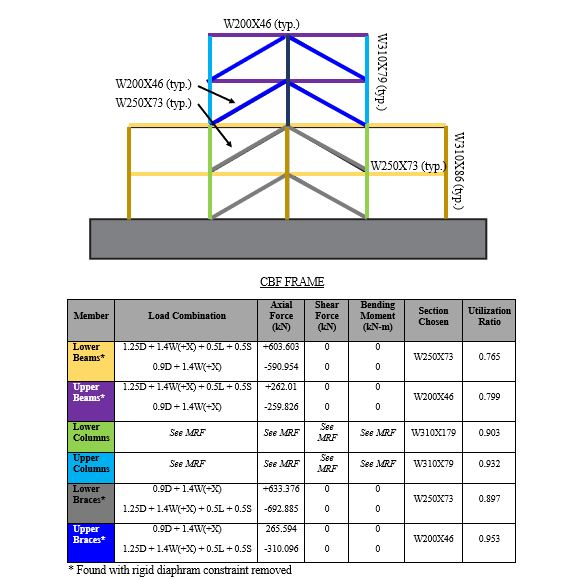
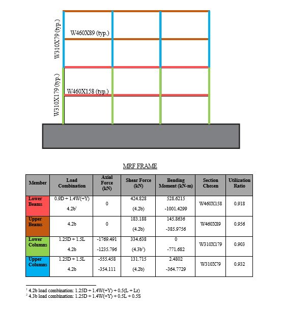
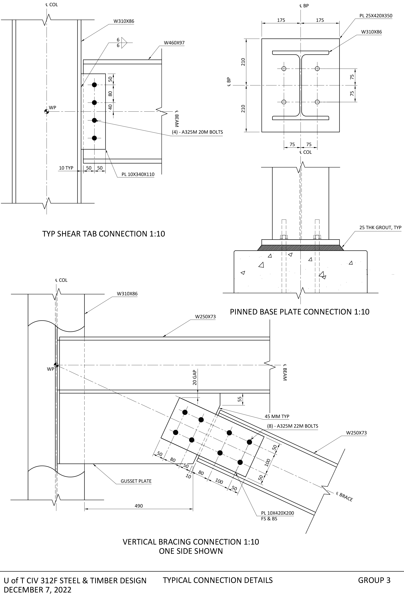
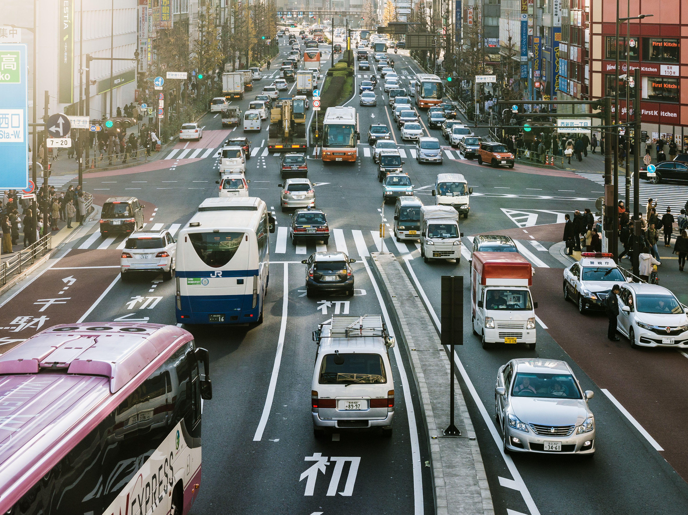
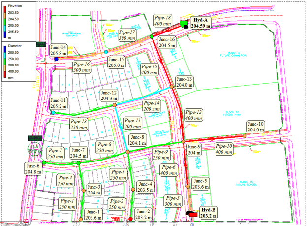
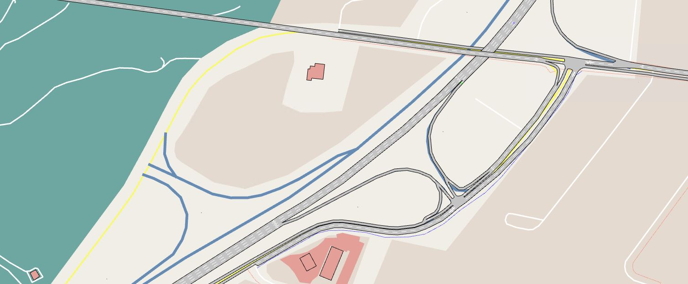
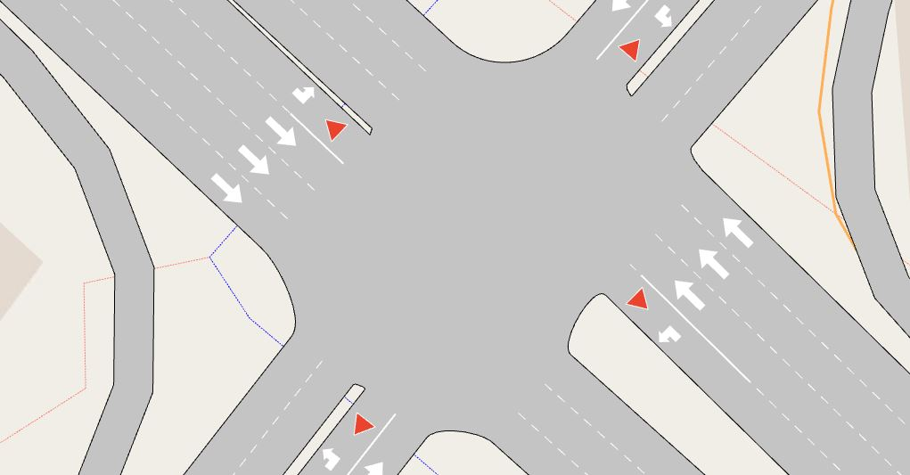
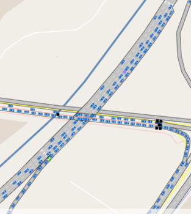
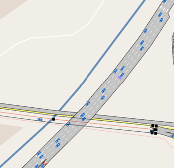

Engineering Projects
Projects that pertain to ... Engineering
Steel Design Project
One of the projects completed throughout my program at Uoft, developing a preliminary design for an office building. This project drew from the skills learnt through our design class as well as the skills for using modeling software. Following the standards codes like the Handbook of Steel Construction and the National building Code of Canada was essential and different steel sections were selected.
Significance
This team project was a bridge between the more theoretical concepts learnt in the previous years of university to the more realistic world applications. Applying teamwork between different tasks and using software for the previously hand calculated values are all things that are more expected in industry. Using calculators for design checks, creating models in software, and checking for different load combinations are all relevant to the civil engineering industry.
 Member Design
In the building was to be built with a combination of moment resisting frames and concentrically braced frames along its two sides. These minute changes had impacts across the SAP model and the different members we chose for each beam and column. From the SAP and the calculated dead and live loads, the first design iteration for the applied loads was performed. The sections in the model were changed and another check was performed for the self weight of the members. Upon reaching satisfaction with design capacity ratios that made the sections both economical and safe, the connection details between the entire structure were designed and modeled in CAD.
Connection Design
The final part of the project I worked using the design forces to create the connections between the different parts of the structure. This included things like the base plate connection, brace connection, and beam column connections. These were done in accordance with the standards mentioned above and can be seen below. I detailed and drew the sections and with accordance with the industry standards given. Different things like bolts, welds, and other relevant callouts are shown.
This project allowed me to improve my communication, problem-solving skills and attention to detail. Effective communication is essential when working with other team members, clients, and stakeholders. Problem-solving skills are needed to identify and address potential issues that may arise during the project. Attention to detail is important to ensure that the design meets all necessary specifications and regulations. These skills can be applied to other design projects as well, making them highly valuable for any professional.
Transportation Position Paper
This project was an introductory project into the subjects of Traposortaiton Engineering and Planning. The goal was to choose an issue and create a compelling argument for or against the topic. I choose to look at the idea of automated vehicles and their effects on traffic flow. I'm intrigued by the prospect of autonomous vehicles and can't wait to watch how this technology progresses. I decided to investigate this because I think autonomous vehicles can significantly improve our daily lives.
Within 500 words, I look at studies regarding the use and models of automated vehicles and the possible implementation and usage of technology in this field. Autonomous vehicles offer benefits in inter-vehicle communication, human error mitigation, and integration of other systems. They can communicate with each other, reduce human error, and integrate with public transportation and ride-sharing services. Overall, they have the potential to greatly improve transportation safety, efficiency, and convenience.
Through this I have learnt more about future technology that is coming as well as the benefits and issues that come with it. This allows me to critically analyze future developments in the auto industry as well as develop my research ability, communication, and improved the depths of my knowledge.
Read here!Municipal Design Project
.jpg)
A team of students undertook a municipal engineering project to design a system for a proposed development. The project involved using AutoCAD to design a water distribution system, a sanitary system, and a stormwater system. The team's objective was to create a functional and efficient system that met the needs of the proposed development. In the process of designing the municipal system for the proposed development, the student team applied their knowledge of fluid dynamics to ensure optimal performance of the water distribution, sanitary, and stormwater systems. They also had to adhere to the local regulations governing municipal systems to ensure compliance and safety.
Different indeterminate systems were tested, and flows and corresponding pressures were determined for pipes. Critical Pipes and other locations of interest were tested using software like EPAnet and existing knowledge of hydrodynamics along with design requirements. The team compiled a report investigating any peculiarities and showcasing our report along with any additional design considerations. I specifically worked on the AutoCAD of the designs and the preliminary modeling of the structure/system of pipes to allow for further iteration and development of requirements for each component. Detailing of each location or point of interest was also done on AutoCAD and any discrepancies in the design were mentioned and rationalized.

Working on larger design projects like this broadened my experiences by collaborating with many people, developed my project management and communication skills, and enhanced my problem-solving and critical thinking abilities. These skills are transferable and can be applied to future career projects.
Transportation Modeling Project
The project provided an opportunity to learn and gain proficiency in using Aimsun software for traffic microsimulation. The project involved creating and analyzing a micro model comprising several intersections, which required developing skills such as creating signal groups, setting up OD matrices, implementing control plans, and simulating traffic incidents, among other related topics. In addition to mastering the use of Aimsun, the project also focused on interpreting and analyzing the data produced by the software, which provided valuable insights into the behavior of the traffic flow and helped inform decision-making.
Setting up a micro model simulation involves several key steps. First, the study area must be defined, including selecting the geographic location and gathering data on traffic demand and the road network. Next, a network model of the study area is created in the simulation software, including the geometry and topology of the road network. Traffic demand and supply parameters are then defined, followed by the assignment of traffic to the network and running the simulation. Finally, the simulation model is calibrated and validated to ensure accuracy. These steps are essential in generating output data that can be used to analyze and understand the behaviour of the traffic system, leading to informed decision-making.
 Moreso throughout the project the idea of ramp metering was introduced and utilized throughout the design. Using an Alinea Controller sensor actuator pair in simulation, the team adjusted the ramp metering occupancy to optimize flows and traffic on the simulated freeway. Further analysis was done upon the outputs of flow and delay time to get a better graph of the actions occurring through the model. A presentation was done regarding the project and our design was concisely presented and defended. Overall, having knowledge of Aimsun and traffic dynamics can enable transportation engineers to design and implement transportation solutions that improve the safety and efficiency of our transportation systems.